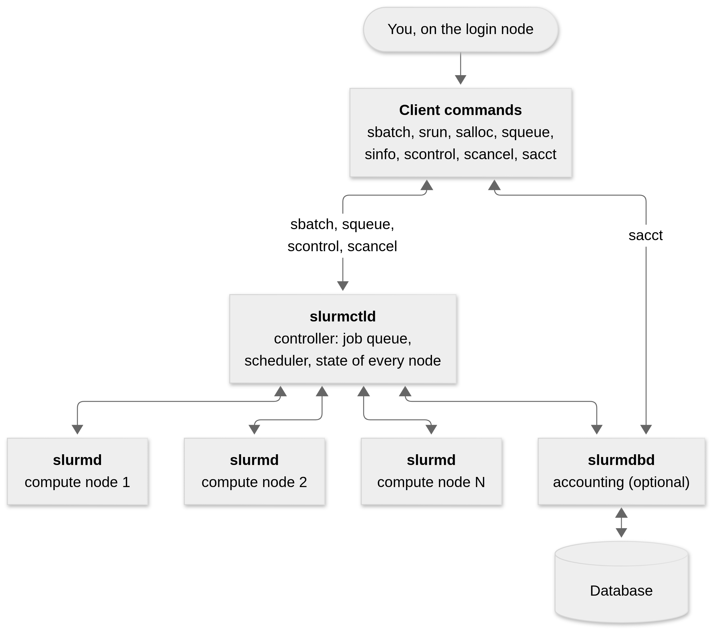
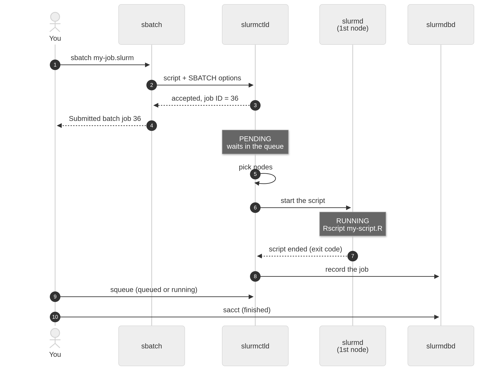
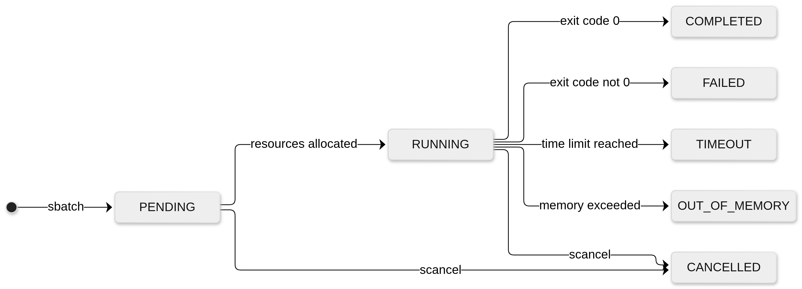
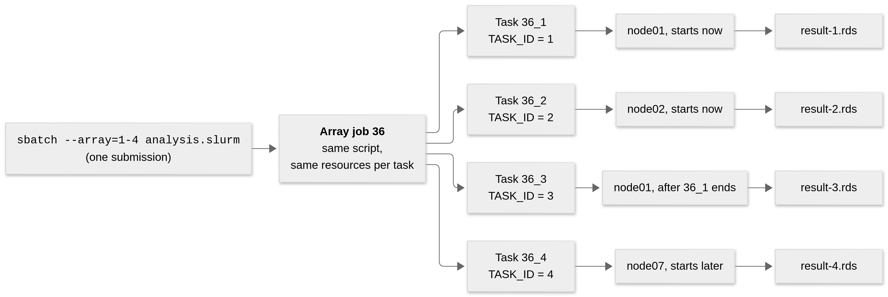
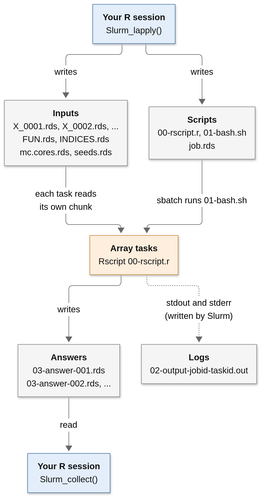
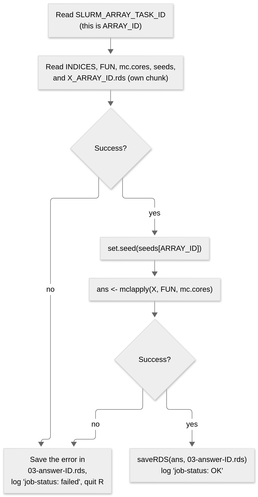
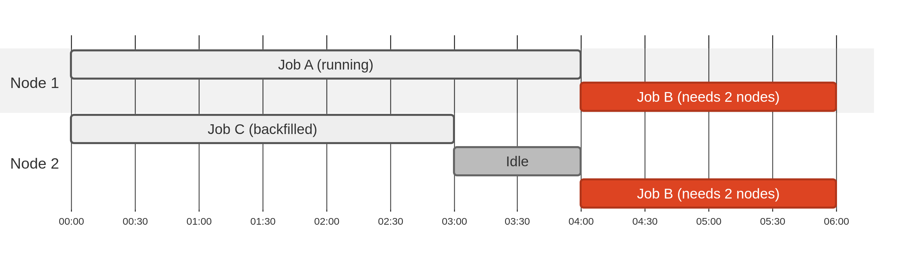
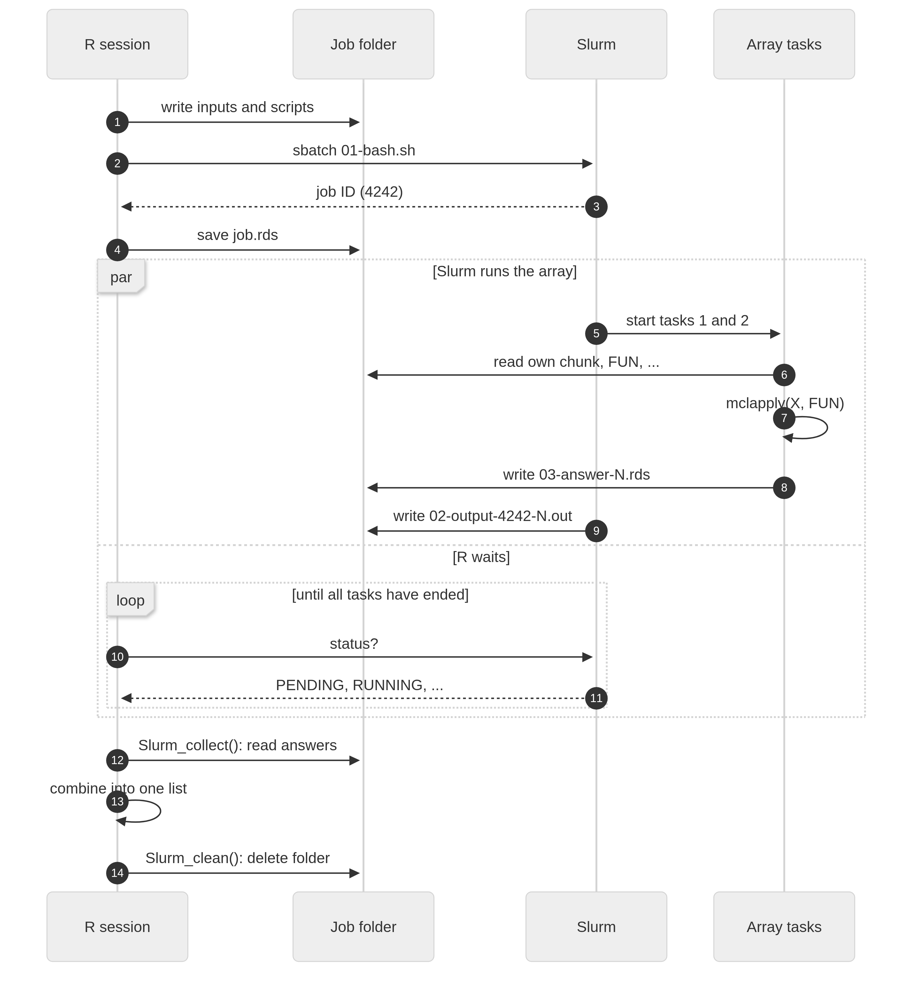

Under the hood: Slurm and slurmR
This chapter was written almost entirely by Claude code. The author asked it to create a more detailed version of how Slurm and slurmR work. The contents have been checked and edited by the author, but the original draft was generated by AI. Furthermore, the AI used documenation from the slurmR package (written by the author) to explain how the package works.
In the previous chapter we learned the vocabulary (nodes, partitions, tasks, CPUs) and submitted a “Hello world” with sbatch. Before we start running real analyses in the next chapter, it is worth spending a few minutes understanding what happens after you press enter. When something goes wrong on a cluster (a job that never starts, a job that dies without a message, results that never show up), the answer almost always lies in one of the moving parts we describe here.
This chapter has two parts:
How Slurm works: the processes that make up a Slurm cluster, the life of a job from submission to completion, how the scheduler decides what runs where, and what a job array is.
How slurmR works: how the
slurmRpackage uses job arrays to give youparallel-like functions (Slurm_lapply(),Slurm_sapply(), …) that run on a cluster, including every file it creates along the way.
No code needs to be run to follow this chapter. The only R output you will see comes from the package’s “verbose mode,” which prints what slurmR would do without submitting anything.
How Slurm works
The cast of characters
Slurm is a collection of programs that talk to each other over the network. Some of them run all the time (called daemons, the d at the end of slurmctld, slurmd, and slurmdbd), and others are the commands you type. Figure 6.1 shows how they relate to each other, and Table 6.1 describes each piece.

| Piece | Where it runs | What it does |
|---|---|---|
slurmctld |
Management node | The “brain.” It keeps the list of all nodes and their state, holds the queue of jobs, decides which job runs where and when, and tells the nodes what to do. There can be a backup controller in case this one fails. |
slurmd |
Every compute node | The “worker.” It sits on a node waiting for instructions from slurmctld, starts the work, monitors it, reports back when it ends, and waits for more. It is often compared to a remote shell. |
slurmdbd |
Management node (optional) | Records accounting information (who ran what, for how long, using how much memory) in a database. This is where sacct gets its information. |
| Client commands | Login node (and compute nodes) | sbatch (submit a script), srun (run a command in an allocation), salloc (get an interactive allocation), squeue (list jobs), sinfo (list nodes and partitions), scontrol (inspect and modify), scancel (cancel), sacct (past jobs). |
An important consequence of this design is that the login node is only a front door. When you type sbatch, the command does not run your script: it sends a request to slurmctld and returns. Your script will run later, on one or more compute nodes, under the supervision of slurmd.
Nodes, partitions, jobs, and job steps
In the previous chapter we defined nodes and partitions. Slurm adds two more concepts on top of them: the job and the job step.
A job is a resource allocation: “give me these nodes/CPUs/memory for this long.” Each job gets a unique job ID (the number
sbatchprints afterSubmitted batch job).A job step is a set of tasks launched inside a job, typically with
srun. A job may have one step or many, running at the same time or one after another.
For example, one job may be allocated six nodes of a partition and run a single step that uses all of them, while another job splits its four nodes into two steps of two nodes each. Nodes that don’t belong to any job are free for other jobs to use.
For R users, the most common situation is simple: one batch script (the job) that calls Rscript once (so there is effectively one step). Whatever parallelism you want inside that job (multiple cores with mclapply(), a socket cluster, etc.) is up to your R code. Slurm reserves the resources, it does not parallelize your program.
The life of a job
Figure 6.2 follows a batch job from the moment you submit it to the moment it is recorded in the accounting database.

sbatch my-job.slurm.
In words:
Submission.
sbatchreads your script, collects the#SBATCHoptions at the top (they are just comments for bash, butsbatchparses them), and sends everything toslurmctld. The controller checks that the request makes sense (does the partition exist? are you allowed to use that account? is the time limit allowed?), assigns a job ID, and puts the job in the queue. This is whysbatchreturns immediately.Waiting. The job stays
PENDINGuntil the scheduler finds a place for it (see How Slurm decides who runs where in the appendix of this chapter). The short version: ask for what you need, not much more (so the job fits in gaps and starts sooner) and not less (or Slurm kills it).Allocation and launch. When the resources are available,
slurmctldmarks them as yours, and asks theslurmdof the first node of the allocation to run your batch script. Slurm sets a number of environment variables before doing so (SLURM_JOB_ID,SLURM_CPUS_PER_TASK,SLURMD_NODENAME,SLURM_ARRAY_TASK_ID, …), and everything the script prints to the standard output or standard error goes to the file specified in--output(by defaultslurm-<jobid>.outin the directory where you ransbatch).Running. The script is a regular bash script: it runs commands one after another on that first node. If it calls
srun, Slurm launches job steps on the allocated resources; if it just callsRscript, a single R process starts on that node.Completion. When the script ends, or when something forces it to stop,
slurmdreports back, the resources are released, and the job’s final state and resource usage are recorded.
A job is always in one of a handful of states, which you see in the ST column of squeue and the State column of sacct. Figure 6.3 shows the most common ones, and Table 6.2 lists their codes.

| State | squeue code |
Meaning |
|---|---|---|
PENDING |
PD |
Waiting for resources (or for a higher priority job to go first). |
RUNNING |
R |
The job has an allocation and the script is running. |
COMPLETING |
CG |
The script ended, and Slurm is cleaning up (some processes may still be active). |
COMPLETED |
CD |
The script ended with exit code 0. |
FAILED |
F |
The script ended with a non-zero exit code. |
CANCELLED |
CA |
Someone (you or an admin) cancelled the job with scancel. |
TIMEOUT |
TO |
The job reached the time limit (--time) and was killed. |
OUT_OF_MEMORY |
OOM |
The job tried to use more memory than requested. |
Notice that Slurm decides if a job succeeded based only on the exit code of the batch script. Slurm knows nothing about whether your R code did what you wanted; if R exits normally, the job is COMPLETED. We will see why this matters when we talk about error handling in slurmR.
Job arrays
Many problems in statistics and data science look like this: run the same program many times, changing only a small thing between runs. Simulating a model 1,000 times with different seeds, fitting the same model to 200 datasets, evaluating a grid of tuning parameters, or bootstrapping 5,000 replicates are all examples. Each run is independent of the others, so they can all run at the same time. These are known as embarrassingly parallel problems.
One way to handle this is to write a loop in R that goes over all the cases, and ask for many cores (what we did with mclapply() in the parallel chapter). This works, but all the cores must come from a single node, so you are limited to the size of the largest node, and Slurm has to find one big gap in the cluster big enough for the whole job. The other approach is to submit many small jobs, but typing sbatch a thousand times is clumsy, it floods the queue, and it makes the jobs harder to track.
A job array is Slurm’s answer: you submit one script with one sbatch command and tell Slurm to create N copies of it. Slurm treats each copy, called an array task, as an independent job: it has its own job ID, is scheduled independently (so one task may start right away on node 1, another a few minutes later on node 7, and a third one may wait until the evening), has its own allocation (the resources you requested apply per task, not to the array as a whole), and writes its own output file. The only difference between the copies is a number, the array index, which Slurm makes available to each copy in the environment variable SLURM_ARRAY_TASK_ID. It is up to your script to use that number to decide what to do: which seed to use, which row of a parameter table to evaluate, which chunk of the data to process, or which file to read.
Figure 6.4 shows a job array with four tasks.

The size and the indices of the array are specified with the --array (or -a) option of sbatch:
--array option.
| Option | Tasks created |
|---|---|
--array=1-100 |
1, 2, …, 100 |
--array=1,3,5,7 |
1, 3, 5, and 7 |
--array=1-7:2 |
1, 3, 5, and 7 (a range with a step of 2) |
--array=1-100%10 |
1, …, 100, but no more than 10 running at the same time |
The last one is handy when each task reads a large file or hits a shared resource (like a database), and you don’t want 100 of them doing it at once.
Besides SLURM_ARRAY_TASK_ID, Slurm sets other variables in each task, and offers file name patterns to keep outputs from overwriting each other:
| What | Variable | In --output use |
Example in task 2 of job 36 |
|---|---|---|---|
| ID of the array as a whole | SLURM_ARRAY_JOB_ID |
%A |
36 |
| Index of this task | SLURM_ARRAY_TASK_ID |
%a |
2 |
| ID of this task as a regular job | SLURM_JOB_ID |
%j |
37 |
| Number of tasks in the array | SLURM_ARRAY_TASK_COUNT |
4 |
Slurm also lets you refer to a single task as <array job id>_<task index> (e.g., 36_2), which you can use with squeue, sacct, scontrol, and scancel. Cancelling 36_2 stops only that task; cancelling 36 stops them all.
From R, using the index looks like this. Suppose we want to evaluate a model over a grid of six parameter combinations, one per task. The R script (array-example.R) reads its own index and picks its row:
# Each array task gets a different value of SLURM_ARRAY_TASK_ID
id <- as.integer(Sys.getenv("SLURM_ARRAY_TASK_ID"))
# All tasks build the same grid, but each takes a different row
grid <- expand.grid(
n = c(100, 1000),
rho = c(0.1, 0.5, 0.9)
)
params <- grid[id, ]
set.seed(id) # A different seed per task
res <- my_simulation(n = params$n, rho = params$rho)
# Each task saves its own file
saveRDS(res, sprintf("result-%03d.rds", id))and the bash script that submits it (six tasks, one core each) is
#!/bin/sh
#SBATCH --job-name=array-example
#SBATCH --output=array-example-%A-%a.out
#SBATCH --array=1-6
#SBATCH --cpus-per-task=1
#SBATCH --time=00:30:00
module load R/4.2.2
Rscript array-example.ROne sbatch array-example.slurm creates six jobs, each of which produces its own result-00X.rds and its own log array-example-<jobid>-<X>.out.
Job arrays also have a few advantages that make them the preferred tool for this kind of work:
Scale. The tasks can be spread over many nodes, so the limit is the cluster size (and the administrators’ limits), not the size of one node.
Faster scheduling. Smaller jobs fit more easily in the scheduler’s gaps (see backfill), and Slurm handles a whole array as a single submission instead of thousands.
Failures are contained. If task 17 runs out of memory, the other 99 are not affected, and you can rerun only the task that failed with, e.g.,
sbatch --array=17 analysis.slurm.Easy bookkeeping. One job ID identifies the whole group, and each task’s output is in its own file.
Table 6.5 compares job arrays with the other ways of getting more than one CPU that we have seen so far.
| Strategy | Where does it run? | Who creates the parallelism? |
|---|---|---|
Multicore job (--cpus-per-task=8) |
One job, on one node, with 8 cores | Your R code (mclapply(), parLapply()) |
Multi-task job (--ntasks=8) |
One job, possibly on several nodes | Your R code (e.g., a socket or MPI cluster) |
Job array (--array=1-8) |
8 independent jobs, anywhere in the cluster | Slurm; your script only uses the index |
The slurmR package builds its Slurm_lapply() family of functions on top of job arrays, as we will see in the next part. For more details on job arrays, see the official documentation.
How slurmR works
The idea
The slurmR package (Vega Yon and Marjoram 2019, 2022) is a lightweight wrapper around Slurm. Its design goal is to let you move from the parallel package to a cluster without learning to write Slurm scripts: just as parallel provides parLapply(), parSapply(), and clusterMap(), slurmR provides Slurm_lapply(), Slurm_sapply(), and Slurm_Map(). There is also Slurm_EvalQ(), which evaluates an expression in every job (like clusterEvalQ()), and makeSlurmCluster(), which creates a socket cluster out of a Slurm allocation (we use it in the next chapter).
The Slurm_*apply functions work like this: you hand over a list X and a function FUN; slurmR splits the list in njobs chunks, creates a job array with njobs tasks, and each task applies FUN to its chunk (using mclapply(), so each task can use several cores too). When all tasks are done, it puts the pieces back together. The result is the same as what lapply(X, FUN) would have returned, but the computation happened in as many different jobs as you wanted.
Everything is done by writing files. Every call to Slurm_lapply() creates, at least, two scripts: an R script with the work each array task has to do, and a bash script with the sbatch options that submits it. The data and the function are saved to disk (as .rds files) so that the tasks, which run on other computers, can read them. For this reason, the folder where slurmR writes must be visible from the compute nodes: a shared file system.
A job’s journey
In short, a call like Slurm_lapply(X, FUN, njobs = 2) goes through the following steps. In your R session, slurmR splits X in njobs chunks, saves the chunks, the function, and the options in the job folder, writes the two scripts (00-rscript.r and 01-bash.sh), and runs sbatch 01-bash.sh. Slurm then queues a job array (--array=1-njobs), and each array task runs Rscript 00-rscript.r: it reads its own chunk, computes, and saves its answer in 03-answer-<id>.rds. Meanwhile, your R session polls Slurm until all tasks have finished, Slurm_collect() reads and combines the answers, and, when you no longer need them, Slurm_clean() deletes the job folder.
The next sections go through each of these steps, using the package’s verbose mode to see exactly what is created. A timeline of the whole process is included in the appendix of this chapter.
Looking under the hood
The following example is from the package’s README (Vega Yon and Marjoram (2022)). We create 100 vectors of 50 random numbers each, and we want to compute the mean of each of them using Slurm_lapply():
library(slurmR)
# Loading required package: parallel
# slurmR default option for `tmp_path` (used to store auxiliar files) set to:
# /home/user/project
# You can change this and checkout other slurmR options using: ?opts_slurmR, or you could just type "opts_slurmR" on the terminal.
# Suppose that we have 100 vectors of length 50 ~ Unif(0,1)
set.seed(881)
x <- replicate(100, runif(50), simplify = FALSE)The argument plan = "none" tells Slurm_lapply() to create the job but not to submit it, so we can look at what it produces without needing a cluster. By turning the verbose mode on, slurmR prints the contents of the two scripts it writes:
opts_slurmR$verbose_on()
ans <- Slurm_lapply(x, mean, plan = "none")The output is reproduced as in the package’s README, except that the author’s home directory was replaced with /home/user. We also omit a harmless normalizePath warning that slurmR prints because the job folder does not exist at the moment it checks the path.
--------------------------------------------------------------------------------
[VERBOSE MODE ON] The R script that will be used is located at: /home/user/project/slurmr-job-113bd5bca5b18/00-rscript.r and has the following contents:
--------------------------------------------------------------------------------
.libPaths(c("/home/user/R/x86_64-pc-linux-gnu-library/4.2", "/usr/local/lib/R/site-library", "/usr/lib/R/site-library", "/usr/lib/R/library"))
message("[slurmR info] Loading variables and functions... ", appendLF = FALSE)
Slurm_env <- function (x = "SLURM_ARRAY_TASK_ID")
{
y <- Sys.getenv(x)
if ((x == "SLURM_ARRAY_TASK_ID") && y == "") {
return(1)
}
y
}
ARRAY_ID <- as.integer(Slurm_env("SLURM_ARRAY_TASK_ID"))
# The -snames- function creates the write names for I/O of files as a
# function of the ARRAY_ID
snames <- function (type, array_id = NULL, tmp_path = NULL, job_name = NULL)
{
if (length(array_id) && length(array_id) > 1)
return(sapply(array_id, snames, type = type, tmp_path = tmp_path,
job_name = job_name))
type <- switch(type, r = "00-rscript.r", sh = "01-bash.sh",
out = "02-output-%A-%a.out", rds = if (missing(array_id)) "03-answer-%03i.rds" else sprintf("03-answer-%03i.rds",
array_id), job = "job.rds", stop("Invalid type, the only valid types are `r`, `sh`, `out`, and `rds`.",
call. = FALSE))
sprintf("%s/%s/%s", tmp_path, job_name, type)
}
TMP_PATH <- "/home/user/project"
JOB_NAME <- "slurmr-job-113bd5bca5b18"
# The -tcq- function is a wrapper of tryCatch that on error tries to recover
# the message and saves the outcome so that slurmR can return OK.
tcq <- function (...)
{
ans <- tryCatch(..., error = function(e) e)
if (inherits(ans, "error")) {
ARRAY_ID. <- get("ARRAY_ID", envir = .GlobalEnv)
msg <- paste0("[slurmR info] An error has ocurred while evualting the expression:\n[slurmR info] ",
paste(deparse(match.call()[[2]]), collapse = "\n[slurmR info] "),
"\n[slurmR info] in ", "ARRAY_ID # ", ARRAY_ID.,
"\n[slurmR info] The error will be saved and quit R.\n")
message(msg, immediate. = TRUE, call. = FALSE)
ans <- list(res = ans, array_id = ARRAY_ID., job_name = get("JOB_NAME",
envir = .GlobalEnv), slurmr_msg = structure(msg,
class = "slurm_info"))
saveRDS(list(ans), snames("rds", tmp_path = get("TMP_PATH",
envir = .GlobalEnv), job_name = get("JOB_NAME", envir = .GlobalEnv),
array_id = ARRAY_ID.))
message("[slurmR info] job-status: failed.\n")
q(save = "no")
}
invisible(ans)
}
message("done loading variables and functions.")
tcq({
INDICES <- readRDS("/home/user/project/slurmr-job-113bd5bca5b18/INDICES.rds")
})
tcq({
X <- readRDS(sprintf("/home/user/project/slurmr-job-113bd5bca5b18/X_%04d.rds", ARRAY_ID))
})
tcq({
FUN <- readRDS("/home/user/project/slurmr-job-113bd5bca5b18/FUN.rds")
})
tcq({
mc.cores <- readRDS("/home/user/project/slurmr-job-113bd5bca5b18/mc.cores.rds")
})
tcq({
seeds <- readRDS("/home/user/project/slurmr-job-113bd5bca5b18/seeds.rds")
})
set.seed(seeds[ARRAY_ID], kind = NULL, normal.kind = NULL)
tcq({
ans <- parallel::mclapply(
X = X,
FUN = FUN,
mc.cores = mc.cores
)
})
saveRDS(ans, sprintf("/home/user/project/slurmr-job-113bd5bca5b18/03-answer-%03i.rds", ARRAY_ID), compress = TRUE)
message("[slurmR info] job-status: OK.\n")
--------------------------------------------------------------------------------
The bash file that will be used is located at: /home/user/project/slurmr-job-113bd5bca5b18/01-bash.sh and has the following contents:
--------------------------------------------------------------------------------
#!/bin/sh
#SBATCH --job-name=slurmr-job-113bd5bca5b18
#SBATCH --output=/home/user/project/slurmr-job-113bd5bca5b18/02-output-%A-%a.out
#SBATCH --array=1-2
#SBATCH --job-name=slurmr-job-113bd5bca5b18
#SBATCH --cpus-per-task=1
#SBATCH --ntasks=1
/usr/lib/R/bin/Rscript /home/user/project/slurmr-job-113bd5bca5b18/00-rscript.r
--------------------------------------------------------------------------------
EOF
--------------------------------------------------------------------------------
Warning: [submit = FALSE] The job hasn't been submitted yet. Use sbatch() to submit the job, or you can submit it via command line using the following:
sbatch --job-name=slurmr-job-113bd5bca5b18 /home/user/project/slurmr-job-113bd5bca5b18/01-bash.shThe output has three parts: the R script (00-rscript.r), the bash script (01-bash.sh), and a final warning reminding us that the job has not been submitted and giving the command to submit it manually. The next sections explain each.
The call above did not submit anything but it did write files to disk, so you can inspect them. Once you are done looking, Slurm_clean(ans) removes them.
Where everything lives: the job folder
Each call creates its own folder, which slurmR calls the temporary path of the job. The name of the folder is controlled by two options:
tmp_path: the directory where job folders are created. By default it is the current working directory of your R session (the message you get when you load the package tells you the current value). You can change it for a single call with thetmp_pathargument, or for the whole session withopts_slurmR$set_tmp_path().job_name: the name of the folder (and of the Slurm job). By default it is a random name such asslurmr-job-113bd5bca5b18, so two calls never collide.
The files of a job end up in <tmp_path>/<job_name>/. For the example above, using two jobs, the folder looks like this once the job has run:
slurmr-job-113bd5bca5b18/
├── 00-rscript.r # the R script each array task runs
├── 01-bash.sh # the bash script submitted with sbatch
├── 02-output-<jobid>-1.out # log of task 1 (created by Slurm)
├── 02-output-<jobid>-2.out # log of task 2 (created by Slurm)
├── 03-answer-001.rds # result of task 1 (created by the tasks)
├── 03-answer-002.rds # result of task 2 (created by the tasks)
├── FUN.rds # the function, shared by all tasks
├── INDICES.rds # which elements of X went to which task
├── job.rds # the slurm_job object (job ID, options, ...)
├── mc.cores.rds # number of cores per task
├── seeds.rds # one random seed per task
├── X_0001.rds # chunk of X for task 1
└── X_0002.rds # chunk of X for task 2The files created before submission (00, 01, FUN, INDICES, job, mc.cores, seeds, and the X_* chunks) are written by your R session. The 02-output-* and 03-answer-* files appear only after the tasks run. Table 6.6 describes each of them.
| File | Created by | Description |
|---|---|---|
00-rscript.r |
Your R session | The R script that every array task runs. The same script is used by all tasks; the tasks differ by the value of SLURM_ARRAY_TASK_ID. |
01-bash.sh |
Your R session | The bash script passed to sbatch, with the #SBATCH options. It calls Rscript 00-rscript.r. |
X_0001.rds, X_0002.rds, … |
Your R session | The list X split in njobs chunks, one file per task (by default parallel::splitIndices() makes consecutive, equally sized chunks). Each task reads only its own chunk. |
INDICES.rds |
Your R session | A list that records which elements of X went to each task, which allows putting the results in the right order. |
FUN.rds |
Your R session | The function to apply. Any other argument passed through ... or export is saved here too (as .rds files) and is shared by all tasks. |
mc.cores.rds |
Your R session | The number of cores each task uses with mclapply(). |
seeds.rds |
Your R session | A vector of random seeds, one per task, so that tasks don’t generate the same random numbers (you can provide your own with the seeds argument). |
job.rds |
Your R session | The slurm_job object: the call, the options, the paths, and (after submission) the job ID. It is saved when the job is created and again after it is submitted. |
02-output-<jobid>-<taskid>.out |
Slurm | The log: everything the task printed to the standard output and standard error, including slurmR’s own messages ([slurmR info] ...) and any R error. One file per task. |
03-answer-001.rds, 03-answer-002.rds, … |
The array tasks | The results: the value returned by mclapply(X, FUN) for the chunk, one file per task. |
Figure 6.5 shows who writes and who reads each file.

The login node and the compute nodes must see the same files at the same path. Home directories and project or scratch spaces usually satisfy this, but local disks (like /tmp or a node-local scratch) do not: a file written to /tmp on the login node doesn’t exist on the node where the task runs, and the task will fail while reading its input. If in doubt, ask your system administrators which file system to use, and set tmp_path accordingly.
By default overwrite = TRUE, which means that if <tmp_path>/<job_name> already exists, slurmR deletes it and starts from scratch. This is not a problem with the default random names, but if you set job_name yourself, running the same call twice destroys the results of the first one. Use overwrite = FALSE if you want slurmR to stop instead.
The bash script
This is the bash script generated in the example (01-bash.sh):
#!/bin/sh
#SBATCH --job-name=slurmr-job-113bd5bca5b18
#SBATCH --output=/home/user/project/slurmr-job-113bd5bca5b18/02-output-%A-%a.out
#SBATCH --array=1-2
#SBATCH --job-name=slurmr-job-113bd5bca5b18
#SBATCH --cpus-per-task=1
#SBATCH --ntasks=1
/usr/lib/R/bin/Rscript /home/user/project/slurmr-job-113bd5bca5b18/00-rscript.rIt is a regular Slurm script like the ones in the previous chapters:
--job-nameis the job’s name,slurmr-job-followed by random characters (it appears twice because it is added both by the function and by the options; the repetition is harmless).--outputsends the log to the job folder, using the patterns we saw in Table 6.4:%Abecomes the ID of the array and%athe index of the task. This is how the02-output-<jobid>-<taskid>.outfiles get their names.--array=1-2creates a job array withnjobstasks (the default isnjobs = 2).--cpus-per-taskis taken from themc.coresargument, and--ntasks=1because each array task is a single R process.The last line calls
Rscript(from the same R installation as your current session) on the R script.
You can add anything else the script needs by using the arguments of Slurm_lapply():
sbatch_opt: a named list of options, each of them becomes an#SBATCH --name=valueline.preamble: commands to run beforeRscript, such asmodule load. The preamble can be set for the whole session withopts_slurmR$set_preamble().rscript_opt: options passed toRscript.
For example, the call
job <- Slurm_lapply(
x, mean,
njobs = 4,
mc.cores = 2,
plan = "none",
job_name = "my-means",
sbatch_opt = list(
account = "my-account",
partition = "my-partition",
time = "01:00:00",
`mem-per-cpu` = "2G"
),
preamble = "module load gcc/12.2.0"
)generates the following bash script:
#!/bin/sh
#SBATCH --job-name=my-means
#SBATCH --output=/home/user/project/my-means/02-output-%A-%a.out
#SBATCH --array=1-4
#SBATCH --account=my-account
#SBATCH --partition=my-partition
#SBATCH --time=01:00:00
#SBATCH --mem-per-cpu=2G
#SBATCH --job-name=my-means
#SBATCH --cpus-per-task=2
#SBATCH --ntasks=1
module load gcc/12.2.0
/usr/lib/R/bin/Rscript /home/user/project/my-means/00-rscript.rRemember that, as we saw with job arrays, these resources are per task: the example above asks for four tasks with two CPUs each, one hour and 2 GB of memory per CPU each.
slurmR calls Rscript using the full path of the R installation of your current session (see the last line of the script), and it also copies your library paths (more on that below). Loading a different R with module load R/... in the preamble therefore has no effect on which R runs the tasks. Use the preamble for everything else the tasks need, such as a compiler or a system library (in the example, gcc); if you need another version of R, start your R session with that version.
The R script
The second file is the R script that every array task runs. It is long because slurmR writes it in a self-contained way (it does not even load slurmR: all the helper functions it needs are defined in the script itself). It can be read as five blocks:
1. Setup. The script sets the library paths to be the same as in your session, so the tasks find the same packages, and finds out which task it is by reading SLURM_ARRAY_TASK_ID:
.libPaths(c("/home/user/R/x86_64-pc-linux-gnu-library/4.2", "/usr/local/lib/R/site-library", "/usr/lib/R/site-library", "/usr/lib/R/library"))
message("[slurmR info] Loading variables and functions... ", appendLF = FALSE)
Slurm_env <- function (x = "SLURM_ARRAY_TASK_ID")
{
y <- Sys.getenv(x)
if ((x == "SLURM_ARRAY_TASK_ID") && y == "") {
return(1)
}
y
}
ARRAY_ID <- as.integer(Slurm_env("SLURM_ARRAY_TASK_ID"))If the script is run outside of Slurm (where the variable is empty) the ID defaults to 1, which allows testing the script by hand. It also defines snames(), a helper that builds the file names (00-rscript.r, 03-answer-%03i.rds, etc.) from the task ID, and stores the path and name of the job in TMP_PATH and JOB_NAME.
2. Error handling. Each step that could fail is wrapped in tcq() (short for “tryCatch quietly”). This is the function that deals with errors:
tcq <- function (...)
{
ans <- tryCatch(..., error = function(e) e)
if (inherits(ans, "error")) {
ARRAY_ID. <- get("ARRAY_ID", envir = .GlobalEnv)
msg <- paste0("[slurmR info] An error has ocurred while evualting the expression:\n[slurmR info] ",
paste(deparse(match.call()[[2]]), collapse = "\n[slurmR info] "),
"\n[slurmR info] in ", "ARRAY_ID # ", ARRAY_ID.,
"\n[slurmR info] The error will be saved and quit R.\n")
message(msg, immediate. = TRUE, call. = FALSE)
ans <- list(res = ans, array_id = ARRAY_ID., job_name = get("JOB_NAME",
envir = .GlobalEnv), slurmr_msg = structure(msg, class = "slurm_info"))
saveRDS(list(ans), snames("rds", tmp_path = get("TMP_PATH", envir = .GlobalEnv),
job_name = get("JOB_NAME", envir = .GlobalEnv), array_id = ARRAY_ID.))
message("[slurmR info] job-status: failed.\n")
q(save = "no")
}
invisible(ans)
}If an error happens, tcq() prints a message to the log, saves the error in the task’s answer file (03-answer-<id>.rds) instead of the results, and quits R. Since q() exits with status 0, Slurm will consider the task as COMPLETED even though your function failed. The place to look for the problem is the log ([slurmR info] job-status: failed.).
3. Reading the inputs. Each task loads the objects it needs; notice that X_%04d.rds is formatted with ARRAY_ID, so each task reads only its own chunk:
tcq({
INDICES <- readRDS("/home/user/project/slurmr-job-113bd5bca5b18/INDICES.rds")
})
tcq({
X <- readRDS(sprintf("/home/user/project/slurmr-job-113bd5bca5b18/X_%04d.rds", ARRAY_ID))
})
tcq({
FUN <- readRDS("/home/user/project/slurmr-job-113bd5bca5b18/FUN.rds")
})
tcq({
mc.cores <- readRDS("/home/user/project/slurmr-job-113bd5bca5b18/mc.cores.rds")
})
tcq({
seeds <- readRDS("/home/user/project/slurmr-job-113bd5bca5b18/seeds.rds")
})4. The computation. The task sets its seed (seeds[ARRAY_ID]) and applies the function to its chunk with parallel::mclapply():
set.seed(seeds[ARRAY_ID], kind = NULL, normal.kind = NULL)
tcq({
ans <- parallel::mclapply(
X = X,
FUN = FUN,
mc.cores = mc.cores
)
})5. Saving the answer. The result is saved in 03-answer-<id>.rds, and a final message is printed to the log:
saveRDS(ans, sprintf("/home/user/project/slurmr-job-113bd5bca5b18/03-answer-%03i.rds", ARRAY_ID), compress = TRUE)
message("[slurmR info] job-status: OK.\n")Figure 6.6 summarizes what each array task does.

00-rscript.r.
Submitting, monitoring, and logs
With the default plan = "collect", Slurm_lapply() writes the files, submits the job, waits for it, and collects the answers in a single call. slurmR submits the job by running sbatch and reading the job ID that Slurm prints (Submitted batch job 4242), then stores it in the slurm_job object (and in job.rds). After that it waits: it repeatedly asks Slurm for the state of the tasks (using sacct) until all of them have finished, either successfully or with a failure. How much of this happens in one call is controlled by the plan argument:
plan argument of Slurm_lapply() and friends.
plan |
What Slurm_lapply() does |
Returns |
|---|---|---|
"none" |
Writes the files only. Nothing is submitted. | The slurm_job object |
"submit" |
Writes the files and submits the job, then returns right away. | The slurm_job object |
"wait" |
Writes, submits, and waits until all tasks have finished. | The slurm_job object |
"collect" (default) |
Writes, submits, waits, and collects the answers. | The results (a list) |
With plan = "collect" or "wait" your R session is busy until the whole job ends, so if the session is closed (or you lose your connection to the cluster), you lose the connection to the job. The job itself keeps running, though. For long jobs, use plan = "submit", and come back later: read_slurm_job("<tmp_path>/<job_name>") reads the job.rds file and gives you back the slurm_job object in a new R session, and last_job() returns the last job submitted in the current session.
Once you have a slurm_job object (call it job), you can interact with it using the following functions, which are thin wrappers of the corresponding Slurm commands:
| Function | Equivalent to | What it does |
|---|---|---|
status(job) |
sacct |
A summary of the state of the tasks: 0 all done, 1 all pending, 2 all running, 3 some running, 99 some failed, -1 job not found (yet). |
squeue(job) |
squeue |
Pending and running tasks. |
sacct(job) |
sacct |
Information about finished (and unfinished) tasks. |
Slurm_log(job, 1) |
less 02-output-<jobid>-1.out |
Shows the log of task 1. |
scancel(job) |
scancel |
Cancels the job. |
sbatch(job) |
sbatch |
(Re)submits the job. |
The logs (02-output-*.out) are where you should look first when something doesn’t work. (Slurm_log() shows them.) They contain anything your function printed with print() or message(), the [slurmR info] messages, R warnings and errors, and errors from Slurm itself (like exceeding the memory). A healthy task ends with:
[slurmR info] Loading variables and functions... done loading variables and functions.
[slurmR info] job-status: OK.Collecting the results and cleaning up
When all tasks have finished, Slurm_collect(job) reads the 03-answer-001.rds, …, 03-answer-<njobs>.rds files, in order, and concatenates them into a single list. Since X was split in consecutive chunks, the concatenation puts the results in the same order as the elements of X, so Slurm_lapply(x, mean) returns what lapply(x, mean) would. Slurm_sapply() additionally simplifies the collected list (with simplify2array(), as sapply() does).
Slurm_collect() is picky: if any task is still pending or running, or if one has failed, it stops with the error Nothing to retrieve. Using any. = TRUE makes it read whatever answer files do exist, which is useful to take a look at partial results.
This is also where the job array design pays off. Suppose tasks 1, 2, and 15 to 20 of a 20-task job failed (say, they went over the time limit). You don’t need to run everything again, just those tasks:
# Submitting a simple job
job <- Slurm_EvalQ(slurmR::WhoAmI(), njobs = 20, plan = "submit")
# Checking the status of the job (we can simply print)
job
status(job)
sacct(job)
# Suppose some of the tasks are taking too long to complete (1, 2, and 15 through 20)
# we can stop them and resubmit only those as follows:
scancel(job)
sbatch(job, array = "1,2,15-20") # A new job ID will be assigned
# Once it's done, we can collect all the results at once
res <- Slurm_collect(job)
# And clean up if we don't need to use it again
Slurm_clean(job)(This example was adapted from the package’s manual.) Because the inputs (X_*.rds, FUN.rds, …) are still in the job folder, sbatch(job, array = ...) just submits the same bash script again, restricted to the selected tasks.
The job folder is not removed automatically after collecting, so you can collect again later or look at the logs. When you don’t need it anymore, Slurm_clean(job) deletes the whole folder (it refuses to do so if tasks are still pending or running).
If you used plan = "collect", the function returned the results, not the job object. You can get the job back with last_job(), e.g., Slurm_clean(last_job()).
Other functions of the package
Two other functions of the package work differently, and we will see them in the next chapter:
makeSlurmCluster()submits a single job requesting several tasks, starts R worker processes on them, and connects to them from your session through sockets, likeparallel::makePSOCKcluster(). This is not a job array.sourceSlurm()lets you skip writing the bash script: you put the#SBATCHoptions at the top of an R script, andslurmRcreates the bash file and submits it.
With this picture in mind, we are ready to run some code on the cluster.
How Slurm decides who runs where
A cluster has many users and limited resources, so jobs usually have to wait. The scheduler (part of slurmctld) continuously looks at the queue and decides what to start next. The details are configured by each site, but the general idea has two ingredients:
Priority. Each pending job gets a priority number computed from several factors: how long it has been waiting (age), how much of the cluster you and your group have used recently (fair share: heavy users go back in the line for a while), the size of the job, the partition, and the quality of service (QOS) it was submitted under. Higher priority jobs are considered first.
Backfill. If the highest priority job needs resources that are not free yet (say, two whole nodes) the scheduler doesn’t leave the free resources idle. It looks for lower priority jobs that can run in the meantime without delaying the start of the higher priority job. To do so, it relies on the time limit each job declared with
--time.
Figure 6.7 illustrates backfill in a two-node cluster. Job A is running on node 1 for four hours. Job B has the highest priority in the queue, but needs both nodes, so it must wait for A to finish. Node 2 is idle in the meantime, and job C (low priority, needs one node for three hours) fits in the gap and finishes before B is scheduled to begin, so it is started right away.

This has two practical implications for you:
Ask for what you need, not for much more. Requests with shorter time limits, fewer CPUs, or less memory are easier to fit in the gaps, so they tend to start sooner.
…but not for less. If you ask for one hour and your job needs two, Slurm kills it at the one-hour mark (
TIMEOUT). The same goes for memory (OUT_OF_MEMORY). Estimate your needs by running a small version of the job first (see the profiling chapter), and look at the report of finished jobs withsacct.
Putting it all together: a Slurm_lapply() timeline
Figure 6.8 puts the whole story in a single timeline.

Slurm_lapply(x, FUN, njobs = 2) with plan = "collect".